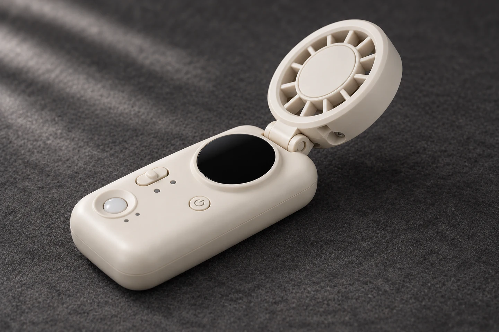

Складной вентилятор SS-056
Обдув с собой
Головка разворачивается для обдува и складывается к ручке для дороги.
- Обдув
- 3 скорости
- Складной корпус
- Шарнир
- Зарядка
- USB-C
Как складывается вентилятор

Головка на шарнире
Круглая головка поворачивается на шарнире и прилегает к ручке.
Где пригодится ручной обдув?
На остановке в жаркий день
Пока ждёте автобус, можно держать ручку у груди и повернуть круглую головку к лицу. Начните с первой скорости и прибавьте поток, если на открытом воздухе его ощущается мало.
Перерыв за общим столом
Если рядом коллега или на столе лежат бумаги, поднесите вентилятор ближе к себе и поверните головку. Так можно выбрать удобное направление и оставить пространство перед соседом свободным.
В дороге с пересадками
На коротких остановках выручает шнурок из комплекта. Перед длинным переходом выключите вентилятор и сложите головку к ручке, чтобы убрать прибор в сумку и освободить руки.
В дороге
Разложить
Разверните головку и направьте поток туда, где он нужен. Доступны три скорости.
Носить
Шнурок входит в комплект. На него удобно подвесить вентилятор между включениями.
Сложить
Перед тем как убрать вентилятор, головку можно повернуть к корпусу.
Кабель и шнурок в комплекте
Шнурок и кабель USB-A — USB-C входят в комплект.

Характеристики
Все параметры 5
- Скорости
- 3
- Зарядка
- USB Type-C
- Конструкция
- Складная
- Дисплей
- Цифровой
- Аксессуары
- Кабель Type-C и шнурок
Какой разъём нужен для комплектного кабеля?
Со стороны источника питания у кабеля прямоугольный штекер USB-A. Другой конец, Type-C, подключается к вентилятору. Проверьте, какой свободный порт есть у вашего адаптера.
Как держать корпус, чтобы не закрывать поток?
Обхватите плоскую ручку под круглой головкой. Оставьте решётки с обеих сторон головки открытыми и меняйте наклон за корпус.
Нужно ли снимать детали перед тем, как убрать его?
Головка соединена с ручкой шарниром. Чтобы сложить вентилятор, достаточно выключить его и повернуть головку к корпусу. Решётка и лопасти остаются на месте.
Где искать управление, когда вентилятор в руке?
Круглый дисплей и переключатели находятся на одной стороне ручки. Разверните её дисплеем к себе. Под ним видны отметки «+» и «−», ниже расположен выключатель.

Складной вентилятор
SS-056
[9 990 ₸]
- [В наличии]
- Доставка [1–7 дней]
- Гарантия [12 месяцев]
Задать вопрос продавцу
Скопируйте текст и отправьте его продавцу. Название и модель уже указаны.